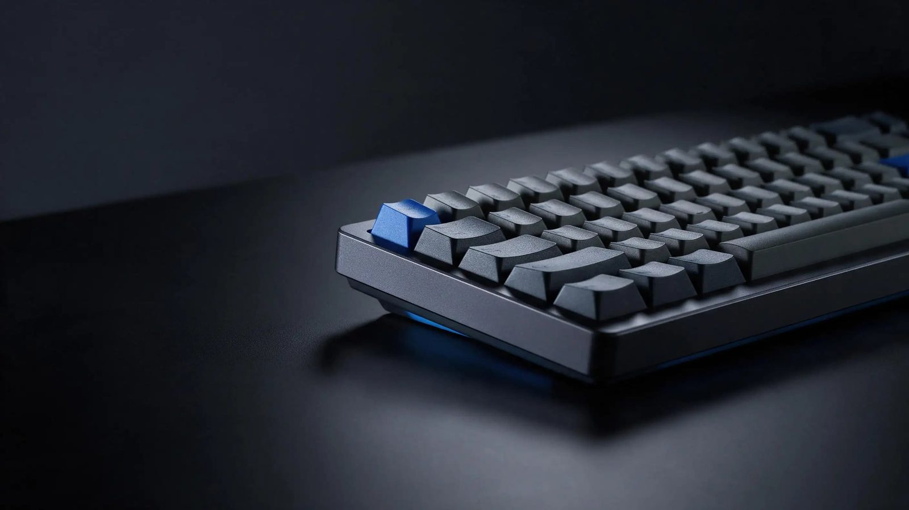
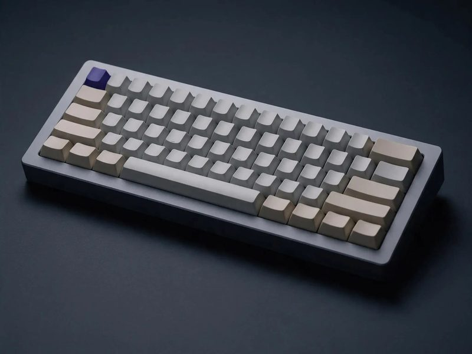

Готові клавіатури
65% · 75% · TKL
148 моделей
Київ · відправка по всій Україні
Готові моделі 65–100% для геймінгу та тривалого друку — і повний набір комплектуючих, якщо ви збираєте кастом із нуля. Кожен перемикач можна послухати онлайн, перш ніж замовити.

65% · 75% · TKL
148 моделей
Лінійні · тактильні · клікові
36 типів
PBT · ABS · Cherry profile
64 сети
Hot-swap · gasket · QMK
52 позиції
Піна · стрічки · плейти
28 позицій
Krytox · збірка · модифікація
19 позицій



Аудіо-семпли тайпінгу для кожного перемикача, записані без компресії та ефектів.
Нова пошта по всій Україні, гарантія 24 місяці та повернення протягом 14 днів.
Збираємо, змащуємо та тестуємо кожну клавіатуру перед відправкою.